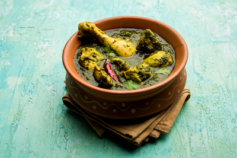

Gongura Chicken

A quick healthy delicious South Indian curry
Do you want to impress your guests with a traditional healthy Chicken dish?
Are you also looking for it to be a not-so-routine, special and delicious dish?
This traditional South Indian curry is right for you. Gongura (Green Sorrel) leaves give that
tangy and nutty flavour to your dish. It also adds an impressive green colour to the curry.
These traditional leaves are used in wide variety of dishes across South India and has proven
health benefits. It makes the guests feel extra special and loved during the special occasion.
Lets get started!
Ingredients
- Chicken - 250 grams
- Gongura (Green Sorrel leaves) - 150 grams
- Water - 500 grams
- Green Chilli - 20 grams
- Coriander Leaves - 20 grams
- Onion - 80 grams
- Oil - 4 Tablespoon
- Salt - as needed
- Garam Masala - 50 grams
- Red Chilli Powder - 10 grams
- Turmeric
Steps
- Wash the gongura leaves thoroughly, keep them aside.
- Clean and wash the chicken thoroughly and keep aside.
- Take chicken in a pressure cooker and add red chilli power, turmeric, 2 cups of water, salt, and mix well and cook it for 15 min
- Heat oil in a pan, add chopped onions and salt and saute till onions change color to a golden brown.
- Add ginger-garlic paste and saute it, add green chilies, sorrel leaves(gongura leaves), mix well and cook it on a very slow flame till oil oozes out
- Then add cooked Chicken along with the remaining water to the same pan and let it cook for 5 more minutes
- Lastly, add garam masala powder and coriander leaves and mix well.
- Tasty delicious Gongura Chicken curry is ready. Serve it with rice or roti